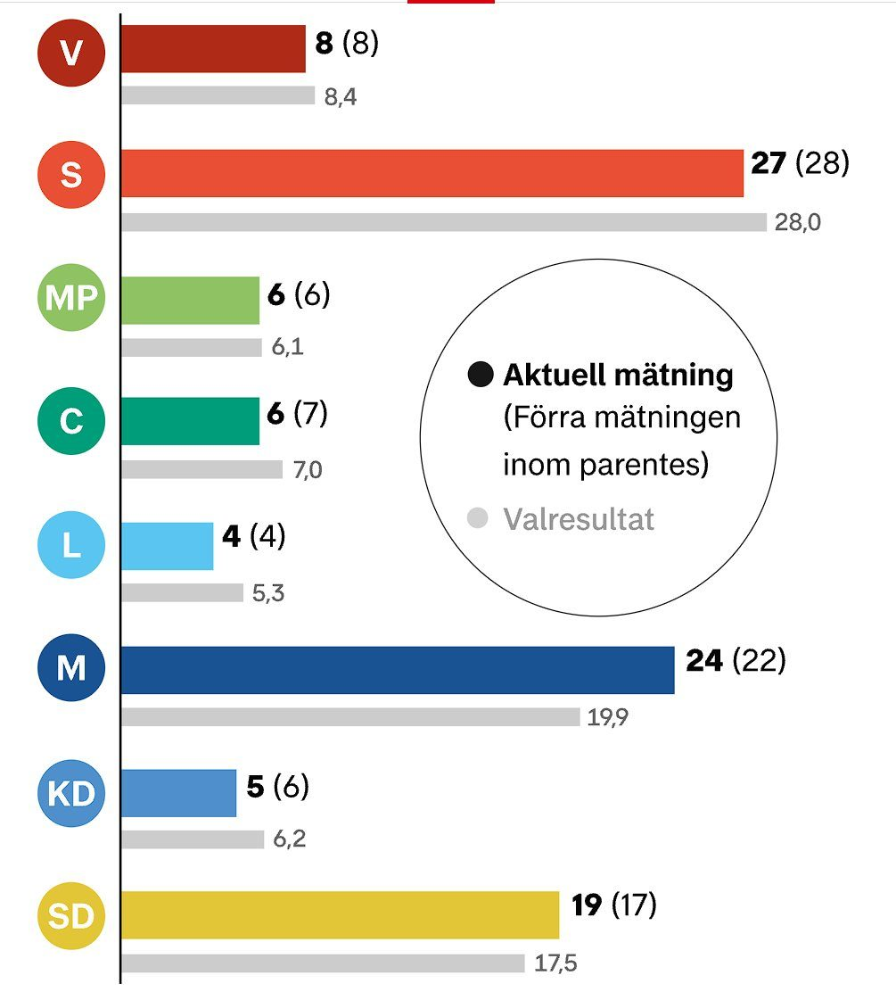

Sverige
Delvis obekräftatTystnaden kring regeringsfrågan – kritiken växer mot S och talmannen

Två dagar efter att C-ledaren gav upp sitt sonderingsuppdrag har inget nytt besked kommit. Inom S växer självkritiken, C och V är irriterade på Magdalena Andersson och talmannens löfte om att undvika "ett nytt 2018" ser allt svårare ut att hålla.
I måndags meddelade C-ledaren Elisabeth Thand Ringqvist talmannen Andreas Norlén att hennes sonderingar inte gett något resultat. Sedan dess har inget nytt besked kommit om hur regeringsbildningen ska gå vidare, och tystnaden har blivit en nyhet i sig.
Före valet sa talmannen att Sverige inte har råd med ett nytt 2018, när regeringsbildningen drog ut i fyra månader. Nu konstaterar Kvartal att kalendern snart ser likadan ut som för åtta år sedan. Expressens ledarsida efterlyser ett nytt drag från Norlén.
Självkritik inom S
Inom Socialdemokraterna växer frustrationen. Enligt Expressen finns en oro för att partiet ska "åka på storstryk", och källor som Aftonbladet talat med säger att partiledningen saknade en plan för regeringsbildningen och underskattade Vänsterpartiets krav på att få sitta i regeringen. Under onsdagskvällen gav sig också den tunga S-profilen Katrin Stjernfeldt Jammeh in i debatten. "Ju längre tid det tar, desto mer tappar man", säger hon till SvD.
Samtidigt är både C och V irriterade på Magdalena Andersson, enligt SvD:s källor. Partierna står långt från varandra i det mesta, men är överens om att hon fortfarande inte har gjort klart vilka partier som ska ingå i hennes regering.
Låsningen kvar
Grundproblemet är detsamma som tidigare: C vill inte ge V inflytande, och V vill sitta i regeringen. Enligt ett inlägg på X ska C-politikern Martin Ådahl ha sagt att partiet inte har något intresse av att erbjuda just V någonting, en uppgift som bygger på en enda källa.
Statsvetarna Carl Dahlström och Johannes Lindvall varnar i SvD för att partiernas hårda krav gör att parlamentarismen inte fungerar som det var tänkt, och att grundlagen kan behöva ändras om ingen ger med sig.
Kritiken breddas
Utanför redaktionerna går debatten i flera riktningar. Niklas Gillström, moderat stabschef på Finansdepartementet, skriver att även Magdalena Andersson nu har lagt en mittenregering "till handlingarna", två dagar efter de andra partierna, utan att komma vidare. Andra användare, med hänvisning till ETC, påpekar att begreppet sonderingsuppdrag inte finns i regeringsformen och att det enligt grundlagen är talmannen själv som ska sondera. Den konservativa sajten Ledarsidorna.se skriver att "bollen ligger stilla" hos talmannen.
Inom S har även Linn Svansbo kallat stiltjen "skämmig" och sagt att partiets stora misstag var att det var så dåligt förberett, enligt en tidningsintervju som delats på X. Samtidigt visar en ny DN/Ipsos-mätning, som den återges av användare, att Moderaterna har sitt högsta stöd på över åtta år och att Tidöpartierna är klart större än de rödgröna. Vi har inte sett siffrorna direkt från Ipsos.
Vad händer nu
Regeringen har bekräftat att det blir en övergångsbudget. Nästa steg ligger hos talmannen, som kan ge ett nytt sonderingsuppdrag eller låta riksdagen rösta om en statsministerkandidat. Om riksdagen röstar ner fyra statsministerförslag blir det extraval, och den frågan diskuteras nu allt mer öppet.
Så vet vi det
Källmix: 12 källor – 1 analys, 2 journalist, 4 etablerad media, 5 debattör. Etablerad media utgör 4 av 12.
- Etablerad media SvD: Stjernfeldt Jammeh om tiden
- Etablerad media SvD: irritationen i C och V
- Etablerad media Expressen ledare om talmannen
- Etablerad media Expressen: oron inom S
- Journalist Kvartal: "inte råd med ett nytt 2018"
- Journalist Kvartal om statsvetarnas SvD-artikel
- Debattör Niklas Gillström (M, stabschef på Finansdepartementet) om Anderssons besked
- Debattör Användare om att "sonderingsuppdrag" saknas i regeringsformen (via ETC)
- Debattör Ledarsidorna.se: "bollen ligger stilla"
- Debattör Användare om S-profilen Linn Svansbos kritik
- Analys Användare om DN/Ipsos: M högst på åtta år
- Debattör Per Markus om Ådahl (en källa)
Uppgifterna om stämningen inom S, C och V bygger på anonyma källor till SvD, Expressen och Aftonbladet. Citatet från Martin Ådahl kommer från en enskild användare. Opinionssiffrorna har vi bara sett återgivna av användare, inte från Ipsos själva. Underlaget saknar primärkällor: varken talmannen eller partiledarna har gjort nya uttalanden på X under dagen.
Fördjupa
Frågorna öppnar Grok i en ny flik med artikeln som underlag. AI-svar kan innehålla fel, så kontrollera mot källorna.
- Hur går en regeringsbildning till enligt regeringsformen, och vad är ett sonderingsuppdrag? ↗
- Vad hände 2018 och varför vill talmannen undvika en upprepning? ↗
- Varför kan C och V inte samarbeta i samma regeringsunderlag? ↗
- Vad händer om riksdagen röstar ner fyra statsministerförslag? ↗
- Hur påverkar den utdragna processen opinionen? ↗
Läs vidare
Uppdateringslogg
- 21:05 – Bredare underlag: politiska aktörers och debattörers reaktioner, kritiken mot själva sonderingsmodellen och nya opinionssiffror. Källtyper märkta; primärkällor saknas fortfarande.
- 20:50 – Artikeln publicerad med läget efter onsdagens utspel.